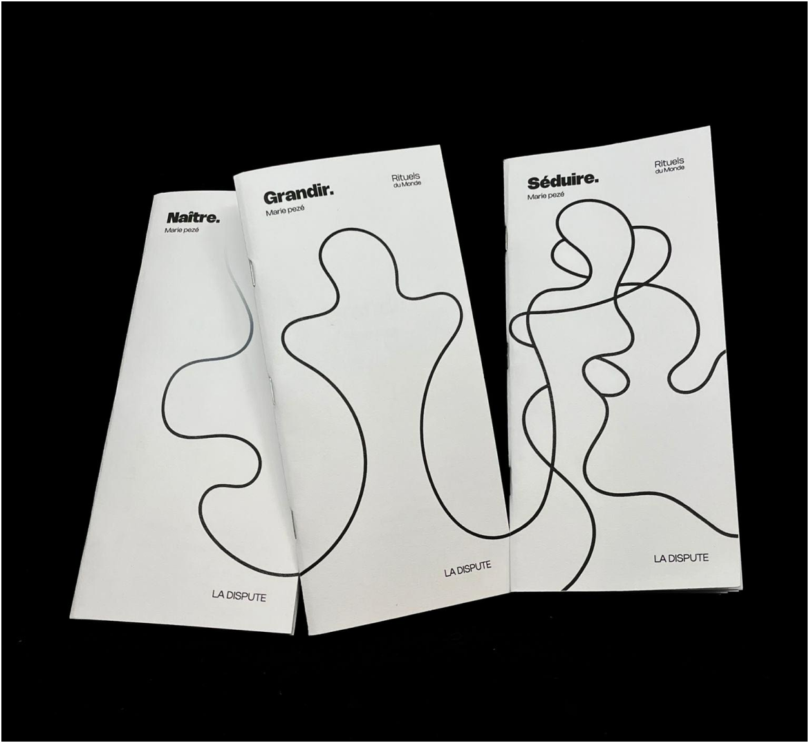
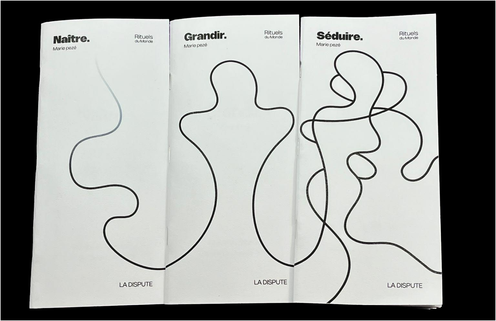
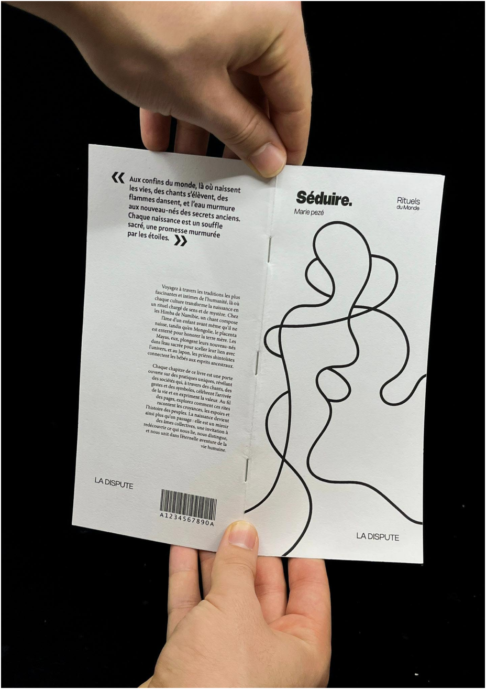
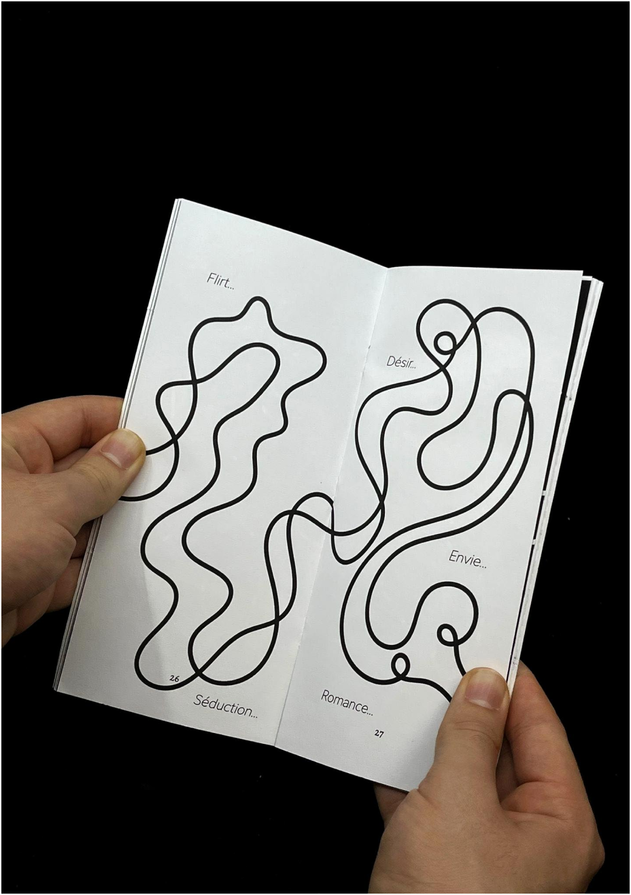
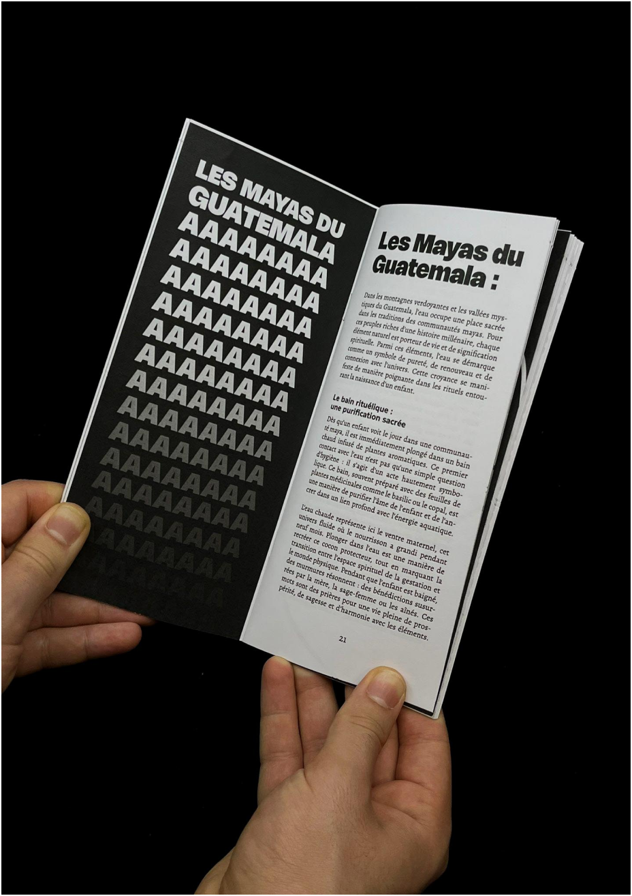

Anthropologie pour tous·tes
Dans le cadre d’un projet éditorial consacré à la vulgarisation de l’anthropologie, j’ai imaginé une collection
de livres visant à rendre des notions de sciences humaines plus accessibles et attractives pour une cible
définie. L’enjeu consistait à transformer des contenus denses (cultures, sociétés, rituels) en objets de lecture
clairs, pédagogiques et inclusifs, sans appauvrir le propos. La démarche s’appuie sur une phase de recherches
(anthropologie, vulgarisation, logique de collection), une veille de maisons d’édition existantes et la
rédaction d’un cahier des charges structurant. À partir de ces éléments, j’ai posé une ligne graphique cohérente
et décliné l’identité sur trois ouvrages, afin de démontrer la solidité du système éditorial et sa capacité à se
renouveler d’un numéro à l’autre.





J’ai construit la collection autour d’un système volontairement minimal et pensé dans une logique
d’éco-conception : palette très réduite, usage maîtrisé de l’encre et formes simples, afin de réduire les coûts
d’impression tout en conservant une identité forte. Les couvertures reposent sur un trait continu unique, comme
un fil narratif, décliné différemment à chaque tome (Naître, Grandir, Séduire) pour créer de la variation sans
perdre l’unité. La hiérarchie est tenue par des titres courts, des repères de collection discrets et un grand
espace blanc, rendant la collection immédiatement reconnaissable et durable.
Couvertures